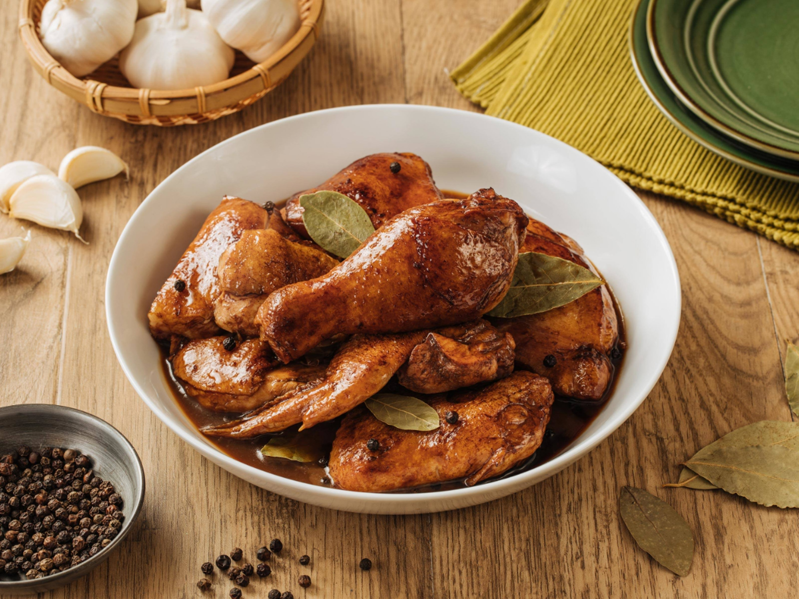

Chicken Adobo is one of the most iconic and beloved dishes in Filipino cuisine. It's a flavorful, savory, and slightly tangy chicken stew that's simmered in a rich marinade of vinegar, soy sauce, garlic, bay leaves, and peppercorns. This dish is known for its deep, umami-rich flavors and is often considered the national dish of the Philippines.

Chicken Adobo
Ingredients
2 tablespoon canola oil
6 cloves garlic crushed
1 pc onion, sliced
1 kilogram chicken cut ups
2 tablespoons vinegar
1/4 cup soy sauce
1 cup water
2 pcs bay leaves
1 teaspoon whole black peppercorns, slightly crushed
2 pc Knorr chicken cubes
1 teaspoon brown sugar packed
Optional: 1 cup kale or spinach
Directions
Heat oil in pan and sauté garlic and onions. Then add chicken to the pan and sear on all sides, until you have a little browning in the chicken skin.
Pour in vinegar, soy sauce and water. Add bay leaves, pepper and Knorr Chicken Cubes. Bring to a boil over high heat then reduce heat to simmer, but do not cover the pan. Continue to simmer for 10 mins.
Remove chicken pieces from sauce and fry in another pan until nicely browned.
Put back fried chicken pieces into sauce. Add sugar and let simmer again for another 10 minutes or until sauce has thickened. Serve warm.